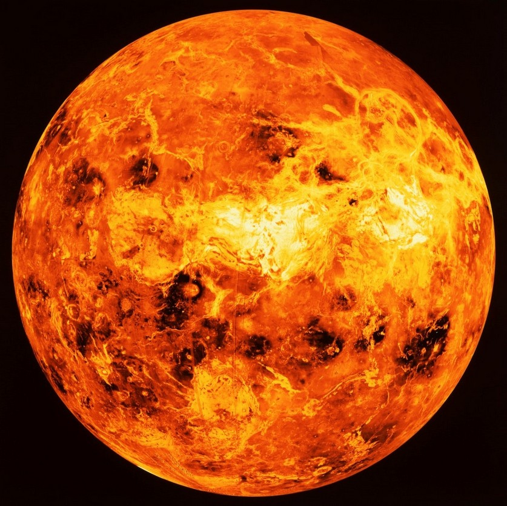
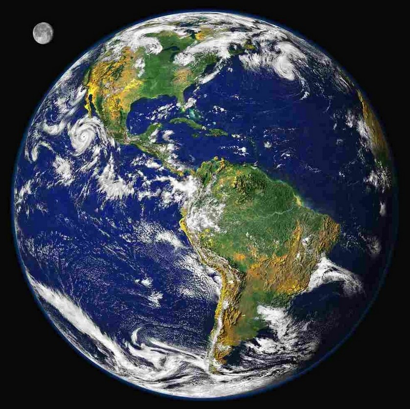
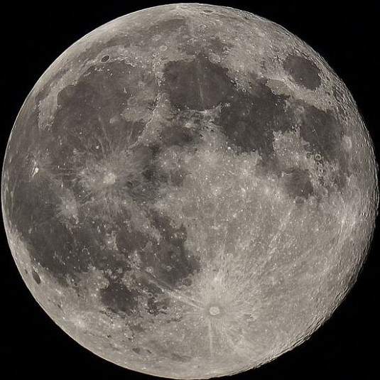

Our planetary system is located in an outer spiral arm of the Milky Way galaxy. Our solar system
consists
of our star, the Sun, and everything bound to it by gravity — the planets Mercury, Venus, Earth,
Mars,
Jupiter, Saturn, Uranus and Neptune, dwarf planets such as Pluto, dozens of moons and millions of
asteroids, comets and meteoroids. Beyond our own solar system, we have discovered thousands of
planetary
systems orbiting other stars in the Milky Way.

The smallest planet in our solar system and nearest to the Sun, Mercury is only slightly larger
than Earth's Moon.

Second planet from the Sun and our closest planetary neighbor, Venus is similar in structure and
size to Earth.

Our home planet is the third planet from the Sun, and the only place we know of so far that’s
inhabited by living things.

Earth's Moon is the only place beyond Earth where humans have set foot. The brightest and
largest object in our night sky, the Moon makes Earth a more livable planet by moderating our home
planet's wobble on its axis, leading to a relatively stable climate. It also causes tides, creating
a rhythm that has guided humans for thousands of years. The Moon was likely formed after a
Mars-sized body collided with Earth. Our moon is the fifth largest of the 190+ moons orbiting
planets in our solar system.